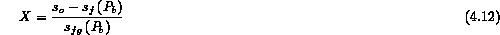
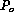

In single phase flow the critical flow velocity is identical to the fluid sound speed at "choking" (M = 1). In general it turns out that the identity of the critical flow velocity and the fluid sound speed is not valid for a multiphase flow. This occurs because the concept of a single sound speed for a mixture of phases loses meaning unless one makes some simplifying assumptions about the fluid phase relationships. There may actually be more than one sound speed; i.e. one for each phase and one for the mixture depending on the flow pattern and geometry.
The homogeneous equilibrium model (HEM) for multiphase critical flow is one example where one can make simplifying assumptions and the identity between the critical flow velocity and a mixture sound speed is preserved. In our discussion we consider a two-phase system for illustration. The HEM model is based on two major assumptions: (i) the velocity of the phases are equal, and (ii) the phases are in thermodynamic equilibrium. These assumptions are the same as used for the HEM pressure drop model. In every respect, once these assumptions are made, the single phase gas dynamic relations for critical flow can be translated to multiphase conditions. Therefore, for isentropic flow conditions (frictionless and adiabatic) the pressure drop is due solely to acceleration pressure drop which results in
where is the specific volume of the mixture and the reciprocal of the mixture density for the HEM formulation. We have already evaluated this partial derivative when considering the HEM pressure drop as
where the partial derivatives are at constant enthalpy under frictionless conditions.
One can use this expression to find the HEM mixture sound speed by multiplying by the mixture specific volume and taking the square root
Figure 4.3 illustrates how this sound speed varies with gas content for an air-water system at atmospheric pressure. Notice that the mixture sound speed falls dramatically to less than 100 m/s with a small amount of gas present. One must keep in mind that this is an idealized model and that transmission of pressure waves may occur at higher speeds in the real system but at lower amplitudes, because the actual flow is not completely homogeneous and each phase has a characteristic sound speed which is higher.
In using this expression to find the critical mass velocity it is necessary to evaluate the indicated partial derivatives at the outlet conditions (e.g., pressure, quality) where "choking" occurs. One must then work back from the outlet conditions to the stagnation conditions. Usually this involves an iterative procedure even though it is analytical, or numerical integration. A straight forward procedure is presented below for a two-phase liquid-vapor system.
To find the critical mass velocity,  , and the associated critical pressure ratio,
, and the associated critical pressure ratio,  , at and below which it occurs one could produce the complete curve of (Figure 4.4). Since the flow is isentropic the entropy at the outlet equals the stagnation entropy. Thus one chooses a downstream outlet pressure,
, at and below which it occurs one could produce the complete curve of (Figure 4.4). Since the flow is isentropic the entropy at the outlet equals the stagnation entropy. Thus one chooses a downstream outlet pressure,  , which determines the saturation entropies, and . The equilibrium thermodynamic quality at the outlet is then
, which determines the saturation entropies, and . The equilibrium thermodynamic quality at the outlet is then

which then defines the enthalpy and specific volume at the outlet
The mass velocity for a particular pressure is found by an energy balance as
One simply reduces the outlet receiver pressure from  until the maximum G is calculated at  . For all pressures below this critical pressure the flow is choked as is the case for single phase flow. One should note that
. For all pressures below this critical pressure the flow is choked as is the case for single phase flow. One should note that  is not a simple function of the thermodynamic state of the system as for a perfect gas and can vary widely for any particular set of stagnation conditions.
is not a simple function of the thermodynamic state of the system as for a perfect gas and can vary widely for any particular set of stagnation conditions.
The accuracy of the HEM model will be discussed later in comparison to some particular data. In general though, let us simply say that the HEM critical flow model has similar limitations as the HEM pressure drop model when the density ratio is large (low pressure when relative velocity is important) and also at low quality (when the nonequilibrium effect is important). As the stagnation pressure and quality increases the HEM prediction improves. Also as the outlet pipe length to diameter ratio increases the HEM model prediction improves, allowing more time for attainment of equilibrium; however one must then include the effect of pipe friction. One should also remember that the stagnation conditions ought to be representative of a homogeneous geometry (dispersed well-mixed) for the HEM model to successfully estimate the outlet flow. If the initial stagnation condition is better represented by stratified phases rather than co-dispersed phases, one might expect the HEM model not to initially give a reliable estimate until flashing and its induced mixing disperses the phases. More likely depending on the location of the pipe single phase flow would first occur followed by flashing and then the two-phase flow. For stratified conditions with short tubes nonequilibrium might be considered. A bounding nonequilibrium model is discussed in the next section.